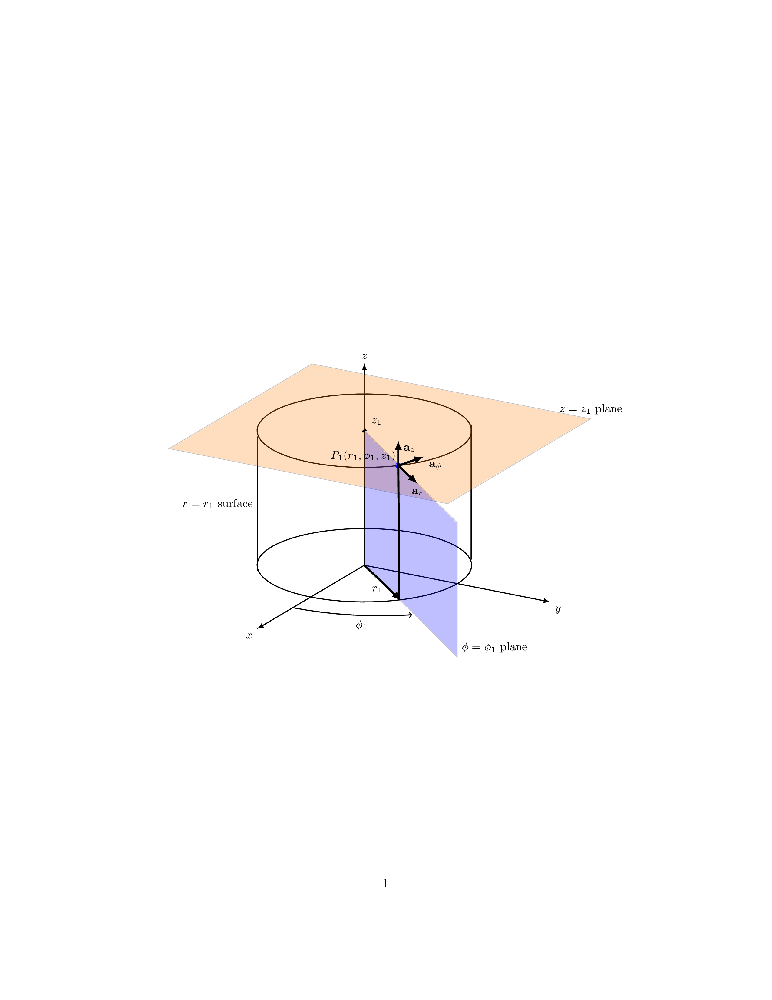

\documentclass{article}
\usepackage{tikz,tikz-3dplot}
\begin{document}
\begin{figure}
\centering
\tdplotsetmaincoords{70}{120}
\begin{tikzpicture}[tdplot_main_coords][scale=0.75]
\tikzstyle{every node}=[font=\small]
\draw[thick,-latex] (0,0,0) -- (6,0,0) node[anchor=north east]{$x$};
\draw[thick,-latex] (0,0,0) -- (0,6,0) node[anchor=north west]{$y$};
\draw[thick,-latex] (0,0,0) -- (0,0,6) node[anchor=south]{$z$};
\draw [thick](0,0,0) circle (3);
\draw [thick](0,0,4) circle (3);
\draw [thick](1.9,-2.35,0) -- (1.9,-2.35,4) node[midway, left]{$r=r_1$ surface};
\draw [thick](-1.9,2.35,0) -- (-1.9,2.35,4);
\filldraw[fill=orange, nearly transparent] (-4,-4,4) -- (4,-4,4) -- (4,5,4) -- (-4,5,4) -- (-4,-4,4);
\filldraw[fill=blue, nearly transparent] (0,0,4) -- (5.2,6,4) -- (5.2,6,0) -- (0,0,0) -- (0,0,4);
\filldraw [color=blue](2,2.25,4) circle (0.075cm) ;
\draw (-4,5,4) node[anchor=south]{$z=z_1$ plane};
\draw (5.2,6,0) node[anchor=south west]{$\phi=\phi_1$ plane};
\node at (1.8,1,4) { $P_1(r_1,\phi_1,z_1)$};
\draw[ultra thick,-latex](2,2.25,4) -- (3,3.45,4) node[anchor=north] {$\mathbf{a}_r$};
\draw[ultra thick,-latex](2,2.25,4) -- (1,2.5,4) node[anchor=north west] {$\mathbf{a}_\phi$};
\draw[ultra thick,-latex](2,2.25,4) -- (2,2.25,4.75) node[anchor=north west] {$\mathbf{a}_z$};
\draw [thick,->](4,0,0) arc (0:45:4 and 4.5);
\draw (3.6,2,0) node[anchor=north] {$\phi_1$};
\draw[ultra thick,-latex](0,0,0) -- (2,2.35,0);
\draw (1,1,0) node[anchor=north] {$r_1$};
\draw [ultra thick] (2,2.25,4)--(1.95,2.25,0);
\draw[ultra thick](0.1,0,4) -- (-0.1,0,4) node[anchor=south west] {$z_1$};
\end{tikzpicture}
\end{figure}
\end{document}Created by David Li